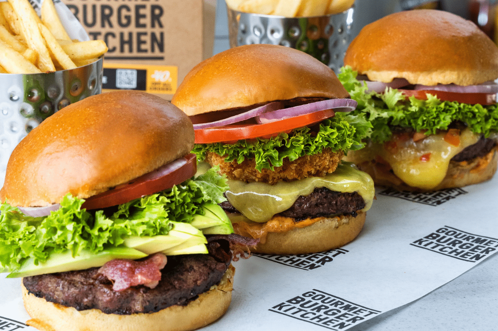

Best Hamburger Patty Recipe
Thick or thin, made on the grill or stovetop, this is the best and easiest all-purpose recipe for perfect hamburger patties every time!
Ingredients
- 2 pounds ground chuck
- 1/2 cup crushed saltine crackers
- 1 large egg
- 2 tablespoons Worcestershire sauce
- 2 tablespoons milk
- 1 teaspoon salt
- 1 teaspoon garlic powder
- 1 teaspoon onion powder
- 1/2 teaspoon black pepper
Instructions
- Set out a large mixing bowl. Add in the ground beef, crushed crackers, egg, Worcestershire sauce, milk, salt, garlic powder, onion powder, and pepper. Mix by hand until the meat mixture is very smooth.
- Press the meat down in the bowl, into an even disk. Use a knife to cut and divide the hamburger patty mixture into 6 – 1/3 pound grill or skillet patties, or 12 thin griddle patties.
- Set out a baking sheet, lined with wax paper or foil, to hold the patties. One at a time, gather the patty mix and press firmly into patties. Shape them just slightly larger than the buns you plan to use, to account for shrinkage during cooking. Set the patties on the baking sheet. Use a spoon to press a dent in the center of each patty so they don't puff up as they cook. If you need to stack the patties separate them with a sheet of wax paper.
- Preheat the grill or a skillet to medium heat. (Approximately 350-400 degrees F.)
- For thick patties: Grill or fry the patties for 3-4 minutes per side.
- For thin patties: Cook on the griddle for 2 minutes per side.
- Stack the hot patties on hamburgers buns, and top with your favorite hamburgers toppings. Serve warm.
Notes
- Homemade hamburger patties will keep well tightly wrapped in plastic wrap or in an airtight container in the fridge for up to 3 days, or in the freezer for up to 3 months.
- If you substitute regular dried breadcrumbs for the crackers or panko, reduce to 1/4 cup. They are denser and will create a “meatloaf texture” if you add the regular amount.